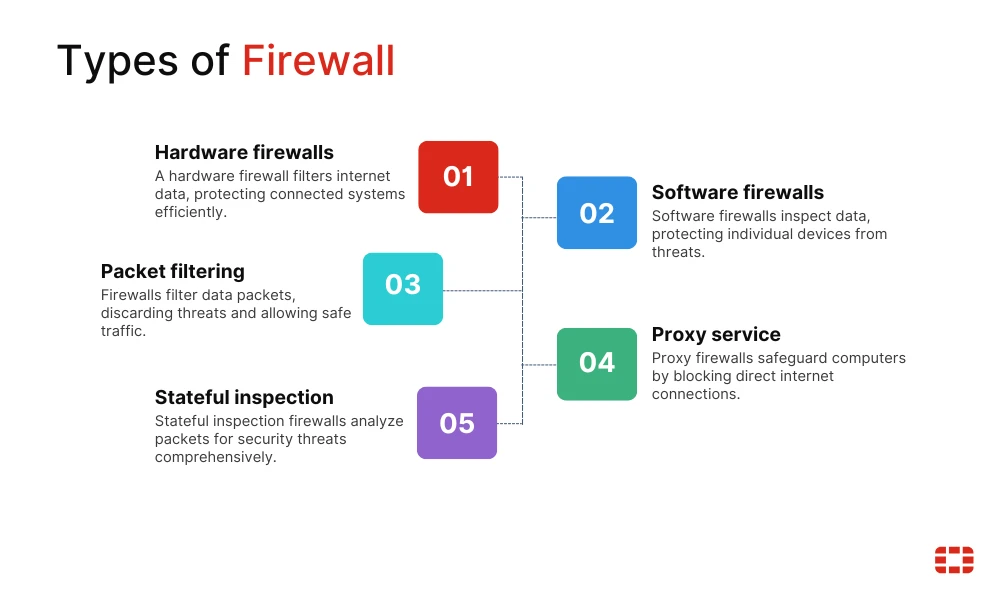
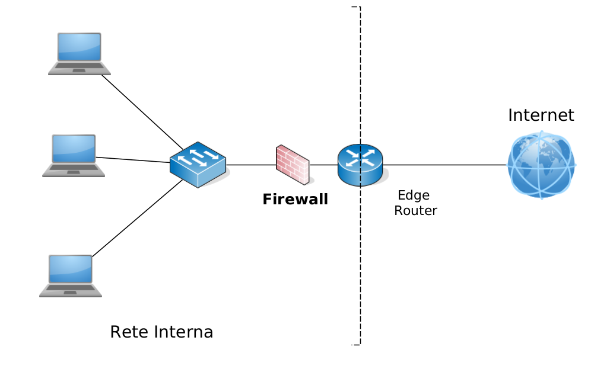

Cosa sono i firewall
Un firewall è un sistema hardware e/o software che monitora i pacchetti in ingresso e uscita, li confronta con delle regole e decide se permetterle o bloccare il traffico.
Esistono tre tipi di firewall: Packet Filtering Girewall, Stateful Inspection Firewall e Application Layer Firewall.

Tipi di firewall
- Packet Filtering Firewall: filtrano i pacchetti in base a indirizzo IP, porta e protocollo
- Stateful Inspection Firewall: tiene traccia delle connessioni TCP attive e riconosce i pacchetti che fanno parte di connessioni legittime
- Application Layer Firewall: analizza il contenuto delle richieste a livello applicativo e blocca contenuti sospetti

Principi dei firewall
- Unicità: il firewall deve essere l’unico punto di contatto tra la rete esterna e quella interna
- Solo il traffico autorizzato può attraversare il firewall
- Il firewall deve essere solo un firewall: non hostare altri servizi sullo stesso dispositivo
